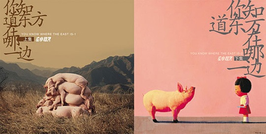

随波逐流，是这个社会的现状，每天挤在大城市的人流里，生活带领我们走向哪一边？我们能掌握自己的未来么？最近看完电影《荒野生存》，毫不犹豫地在豆瓣打了五星。有些人在评论中说男主角应该加强一些户外运动的知识再去探险，这些人就如同影片中的一位女角色，她问男主角：为什么要把钱给烧掉，留着也许以后有需要呢？我们这些所谓现代人，就是有太多太多的束缚，来自欲望的，来自害怕的。很大程度上，我们已经不是自由身。 同样近期火热的《ONCE》，在我看完以后也不能避俗地打了五星。这个电影有种说不清楚的奇妙，说摄影制作，都是低成本的小制作，有些DV的摇晃镜头感，没什么亮点；说故事本身，并没有象一些人所说是“一段荡气回肠的浪漫故事”，虽然后来两人互有爱意，不过并没有大家希望的那样走到了一起，而且也没有什么深深的遗憾因为走不到一起表现出来，这都不符合大众看噱头，献眼泪的心理追求。再说，就是电影中的音乐了，毕竟是一部有关音乐的电影，而且奥斯卡也拿了，里面有些歌的确也不错，男主角在街头撕心裂肺，和最后大家一起在录音棚合的那首都不错，但我单听电影原声，我只打了四星。是因为以THE FRAME这个乐队的名气和才华，很多别的乐队的作品也能达到。如此说来，我为什么偏给这个音乐电影打了五星？ 最后我想到了打五星的缘由。影片过多的时间用力展现他们做音乐的情况，我们可以看到一种默契不经意地流露出来，没有过多对白，当达到了大家都满意的效果时，各自都有会心的愉悦感。这里我看到了一种音乐上的自由，默契，如果你身临其中你一定会感受更深。如果你在大学里有一群人围坐在草地上很高兴的唱歌，你一定觉得那位弹吉他的男生弹得真不错，而平时他可能只是个弹的很烂的人。因为当时你无暇顾及他的吉他技巧，因为你的心正由于相互的心灵撞击达到一种很幸福的状态。如果他弹得不算太烂，能对得上节奏；如果你唱得不算太烂，基本都没走调，那简直就是PERFECT！ 自由，是音乐这一艺术的一大的特性。想想肖申克监狱里的一群囚犯仰望大喇叭的情景。我想许多急功近利追求效益的流行音乐，都做不到。
左小祖咒出新专辑了，500元两张CD，人们大可以骂街，可他免费放到官网供人下载，又让人无话可说。第一次听完觉得这次真的很难听，可我还是坚持要多听两次，并选了第一首《小白兔》放到我们的博客背景音乐里。这两张专辑以《小白兔》开始，以《爱的荣光》结束，这两首都是如此的温暖和催人泪下，夹杂在中间的是一堆激烈的大杂烩，混乱的就如我们当下的社会。我想在一堆讽刺，烦杂纷扰过后，左小祖咒是不是也希望我们有个好的结束。 刚出生的小孩是幸福的，不管是富爸爸，还是穷爸爸；当下的抱怨是漫天的，你知道东方在哪一边？你知道生活在哪个方向？只但愿我们好人善始善终吧。 废话了三个不相关的话题，总结如下： 自由，我们何时能做到？